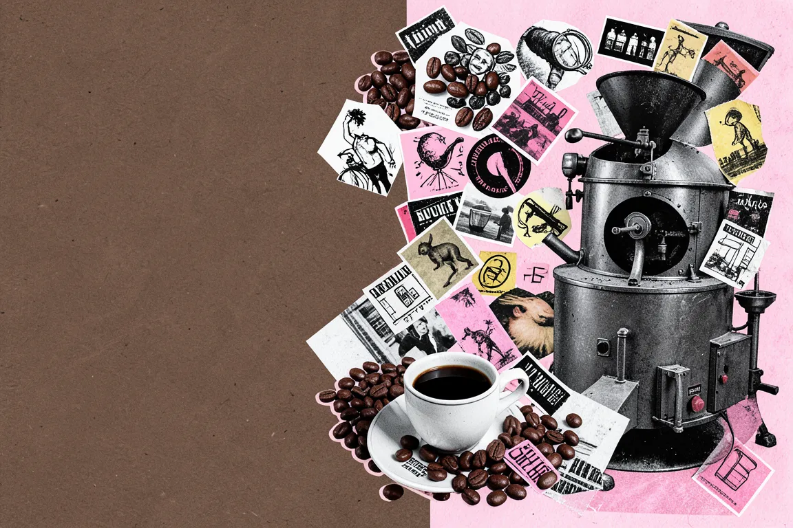

веб · 2016–now · также: Антидизайн в вебе, Уродливый дизайн, Сломанная сетка
Сломанные сетки, спорящий шрифт, наложения, странный цвет и намеренная грубость. Отвечает на лоск шаблонных продуктовых сайтов и просит посетителя заметить дизайн.

Главная идея
Лоск лжёт: страница, нарочно нарушающая правила, показывает, что её сделали люди.
Принципы дизайна
Ломайте сетку нарочно: сдвигайте минимум 3 элемента на 12–80px от любой колонки и накладывайте 2 блока и больше друг на друга на 8–48px.
Смешивайте на странице минимум 3 семейства шрифтов или 4 начертания и масштабируйте шрифт с отношением 3 и больше между соседями.
Берите 4–6 спорящих цветов, включая 1 кислотный (#C6FF00 или #FF3B00), с насыщенностью выше 80%.
Поворачивайте 2–5 элементов на 3–15° и пускайте текст под углом или вертикально.
Ставьте минимум один заголовок 120px и крупнее и обрезайте его краем окна просмотра.
Ставьте сырой или стандартный элемент (системную кнопку, простую таблицу) рядом со стилизованным.
Делайте навигацию странной: подпись не на месте, значок без текста или ссылка внутри заголовка.
Антипаттерны
Центрированные симметричные макеты на аккуратной сетке